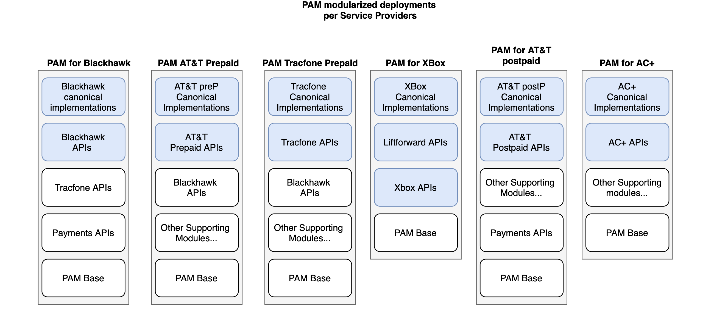

Demo
MAIN TOPICS
Unified API library for AT&T
Create Customer canonical implementation
CONTEXT
- AT&T prepaid activations have become part of Target priorities. Many of its support flows are already available, but a refactoring was implemented for simplifying upcoming developments.
- In parallel, Top Ups module continue growing by supporting customer's validations flows.
Unified API's library for modularization

Unified API's library for modularization
Its purpose is to provide a software component that encapsulates the foundations of
the logic needed to interact with a service provider's APIs in order to achieve a specific goal.
Unified API's library for modularization
Main components
- The business domain classes/POJOs
- The Adapter utility: for low-level data exchange using a communications protocol
- The Invoker utility: that is a PAM-oriented component that simplifies the use of the Adapter in a workflow execution
- The generic error handling workflow
Tracfone's auto-pay - Create Customer
As part of Tracfone Auto-Refill implementation was necessary to remove getDeviceType from
Create Order canonical workflow and add it to Create Customer canonical API call to validate if the
phone number which is going to recharged belongs to an active account
Tracfone's auto-pay - New Customer flow
Tracfone's auto-pay - Existing Customer flow
Tracfone's auto-pay - Create Customer
- For all service providers but Tracfone Create Customer will just be a pass-through
- Only for Tracfone the GetDevice carrier-API will be called
Tracfone's auto-pay - Create customer request
{
"header":{
"dealerCode":"3LAYE",
"serviceProvider":"TTRACFONE",
"sessionId":"",
"clientReferenceId":"0347745",
"clientOriginationId":"9999",
"channel":"INSTORE"
},
"input":{
"mobile":{
"accountPhoneNumber":"1839018390"
}
}
}
Tracfone's auto-pay - Create customer response
{
"header":{
"serviceProvider":"TRACFONE",
"sessionId":"6ee72e1d-d614-4f28-b3b6-b80df85a24ed",
"clientReferenceId":"0347745",
"correlationId":"cfdce152-3bda-11ea-9b59-0242ac120007",
"errors": []
}
}
WHAT WE DID
- We created the first unified API library
AT&T Wiki with a check list for next service providers - Completed the Create Customer canonical API for Top Ups